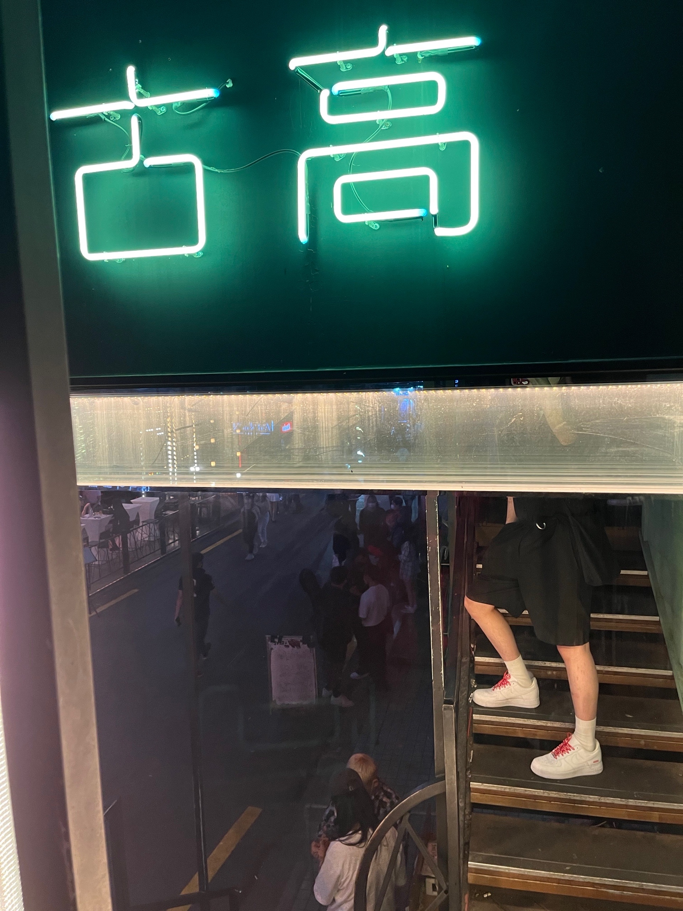

Comments Me
- 안녕하세요!
- 저는 차기 미래의 프론트엔드 개발자로서 꾸준히 성장하는 개발자입니다. 현재는 프론트엔드 개발 분야에서의 경력과 기술을 쌓아가며, 다양한 웹 프로젝트를 통해 경험을 쌓고 있습니다.
- 제 강점은 다음과 같습니다:
- 이 말을 남기며
- 미래에는 사용자들이 보다 편하게 상호작용하고, 유용한 정보를 얻을 수 있는 웹 애플리케이션 개발하며, 웹 기술의 발전에 기여하고싶습니다.
- 이번 "멀티캠퍼스 프론트엔드 취업캠프(React)3회차"에서 많은 도전과 기회를 통해 제 능력을 향상시키고, 협업과 학습을 통해 더 나은 개발자로 성공하여 프론트엔드 개발 분야에서 선두 주자로서 나아가는 것이 제 목표입니다.
- 잘 부탁드립니다!
-
학습과 성장: 저는 항상 새로운 기술과 도구를 배우고 적용하는 것을
즐깁니다. 웹 개발 분야는 끊임없이 발전하고 있기 때문에, 새로운
도전과 학습을 통해 성장하고자 하는 의지가 있습니다.
-
문제 해결 능력: 복잡한 문제에 직면해도 끈기있게 해결책을 찾아내는
능력이 있습니다.